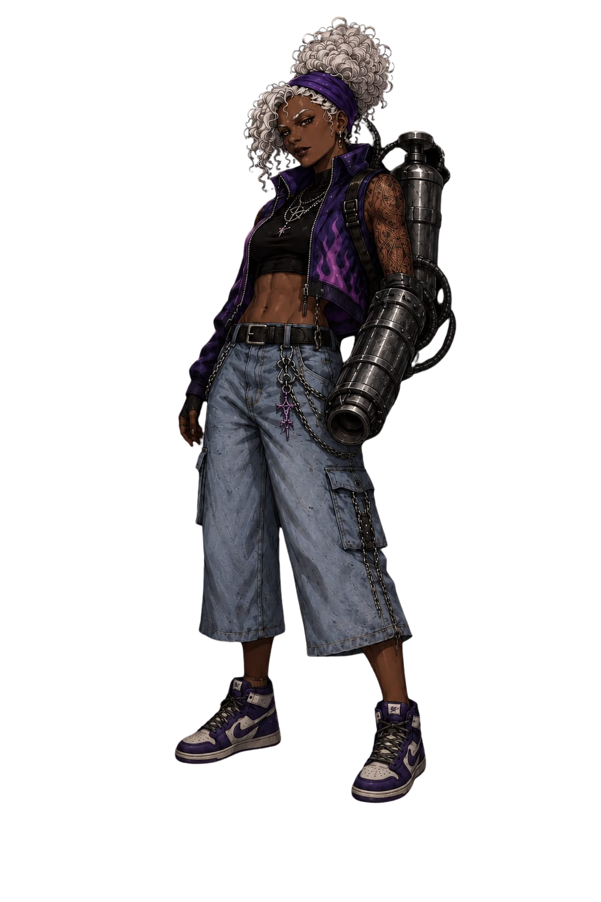
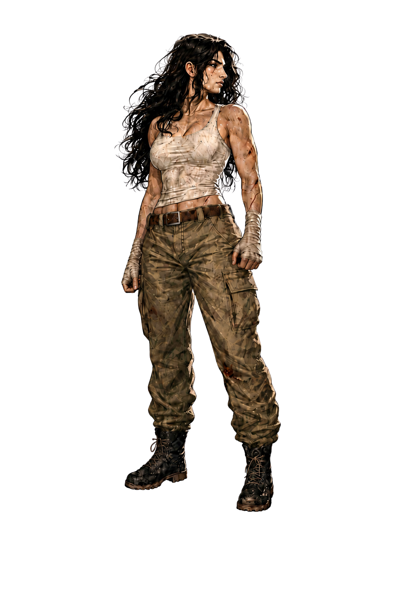
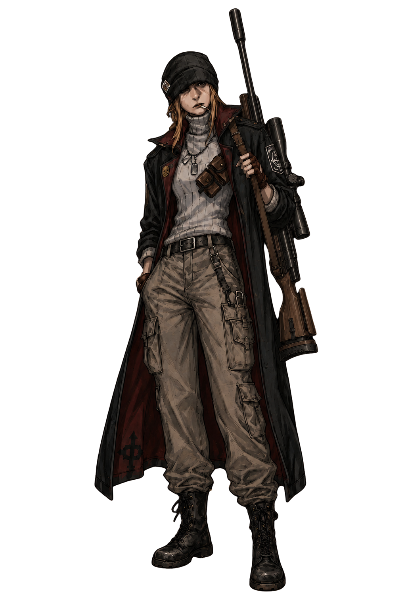
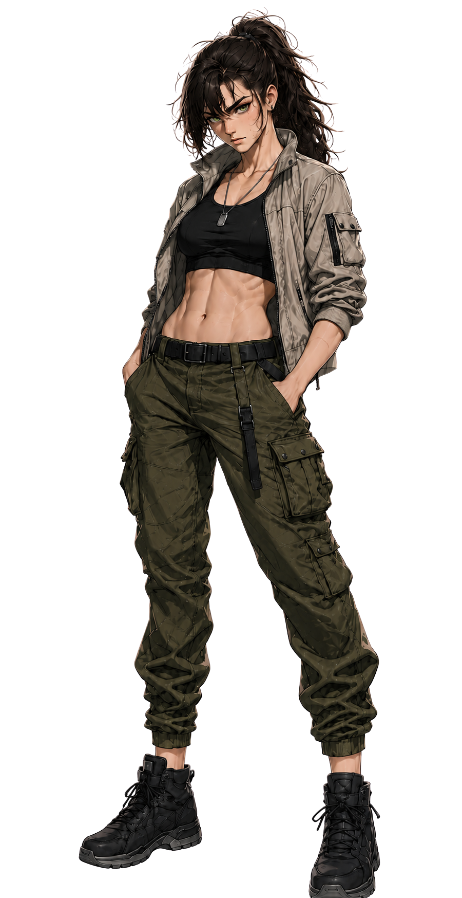
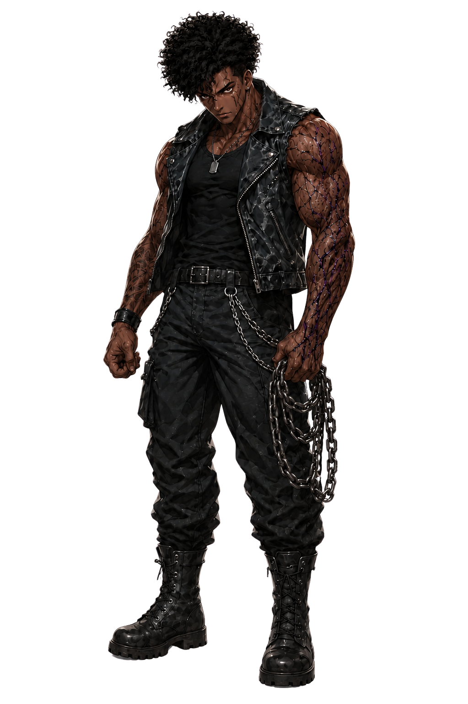

ORDO REALITAS // REGISTROS OPERACIONAIS // CORAÇÕES DO OUTRO LADO
Agentes
Fichas públicas dos jogadores e registros restritos da Ordo Realitas. Os cards bloqueados existem visualmente, mas não liberam conteúdo sensível da campanha.
terminal_ordo.agentes
> renderização dinâmica ativa.
> fichas públicas localizadas.
> registros restritos protegidos.
> chefe de operação identificado.
Filtros de visualização
Fichas públicas dos jogadores
Agentes
Registros liberados para consulta segura dos jogadores.
Liberado
AG-01

Ocultista // Agente de Saúde
Abrir ficha
Maisie Hundown
Suporte ocultista, tecnologia improvisada, Energia paranormal e equipamento pessoal sensível.
Liberado
AG-02

Combatente // Atleta
Abrir ficha
Lilian Moretti
Linha de frente, contenção física, manoplas, proteção de aliados e resistência extrema.
Liberado
AG-03

Especialista // Militar
Abrir ficha
Roselyn Tate
Atiradora de precisão, reconhecimento, metrônomo de prata, rifle do pai e Morte residual.
Registros superiores da Ordo
Trindade
Semi-líderes da Ordo Realitas. Acesso completo reservado ao mestre.
Restrito
TR-01
Semi-Líder // Ocultista
Yuna
Registro superior da área ocultista. Conteúdo completo oculto por segurança operacional.
Restrito
TR-02

Semi-Líder // Especialista
Lisa
Coordenação operacional, análise de missão e ligação entre setores da Trindade.
Restrito
TR-03

Semi-Líder // Combatente
Blender
Força de campo da Trindade, combate direto e missões de alto risco.
Comando da Ordo Realitas
Chefe
Registro de comando. Informações completas permanecem lacradas.
Comando
CMD-01
Chefe // Ordo Realitas
Klint
Liderança operacional da Ordo. Autoridade máxima conhecida neste arquivo. Registro sensível ligado à Trindade e às missões de alto risco.
Leitura rápida
Selecione um registro
Passe o mouse ou clique em um card para visualizar uma leitura rápida do sistema da Ordo.